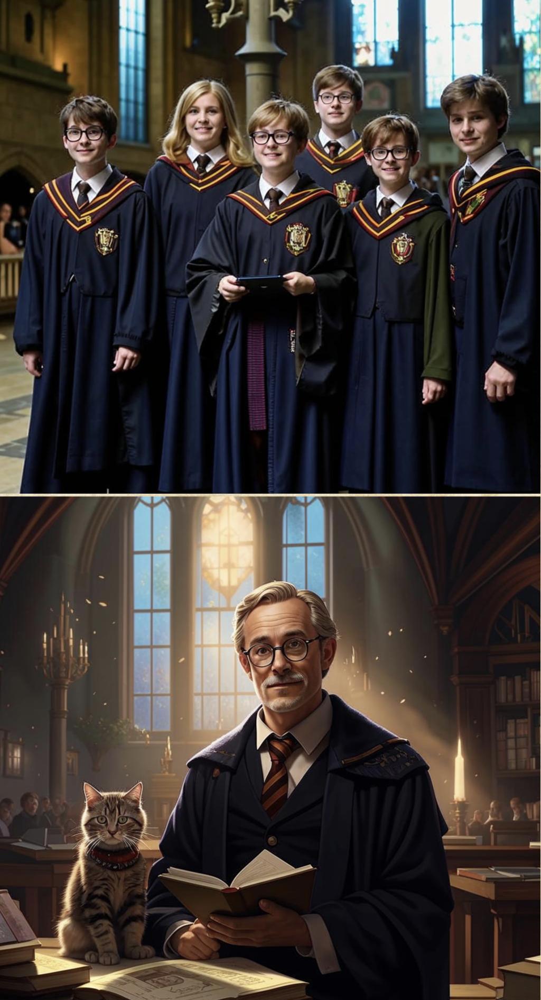

Hogwarts family day
Spring is coming
Н аши корреспонденты провели опрос среди студентов и преподавателей, узнав у них, ждут ли они весну. В результате выяснилось, что бо`льшая часть опрошенных очень ждут тёплую погоду, и особенно ждут солнце. Несмотря на то, что эта зима была не очень холодной, солнечных дней было немного, поэтому редакторы газеты солидарны с этим мнением!Весна в Санкт-Петербурге ожидается аномально тёплая и солнечная. Готовьте солнечные очки, кроссовки и хорошую компанию для долгих прогулок.
Метеорологи
Наши новые друзья
Важно! Каждый студент и сотрудник университета может принять участие в содержании капибар, это
можно сделать несколькими способами:
пожертвовать средства, купить корм или помочь в уборке вольера. За подробностями обращайтесь по
почте kapibar@hogwarts.ru.